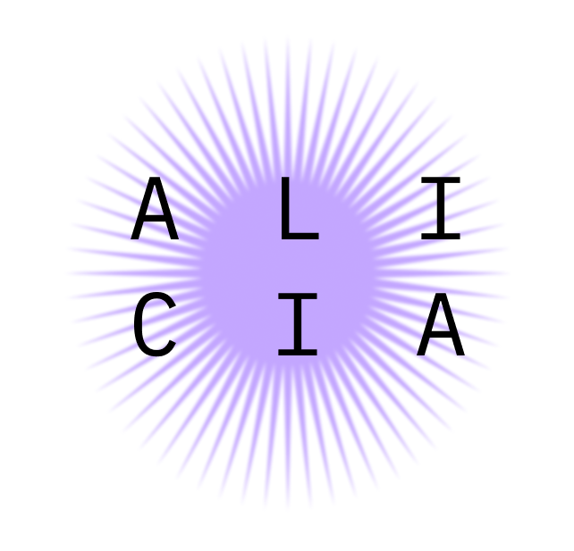

Om mig
|
Ön Antiparos
|
Anmälan Dykarkurs
|
Galleri
| Bildegalleri - ön Antiparos |
Bilder
Nobility of Europe
,
CC BY-SA 4.0
, via Wikimedia Commons
Dimorsitanos
,
CC BY-SA 3.0
, via Wikimedia Commons